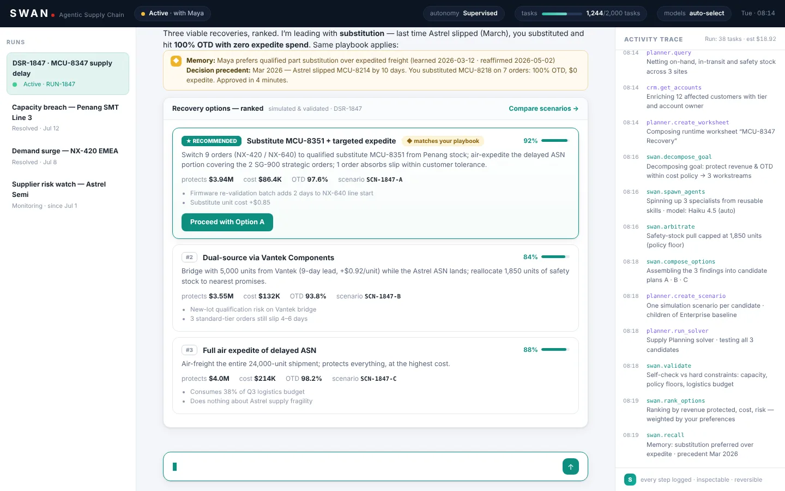
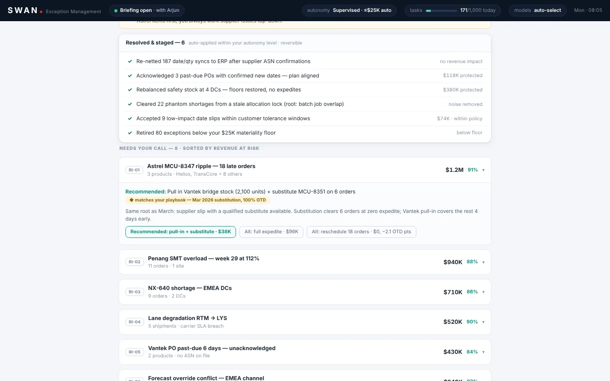
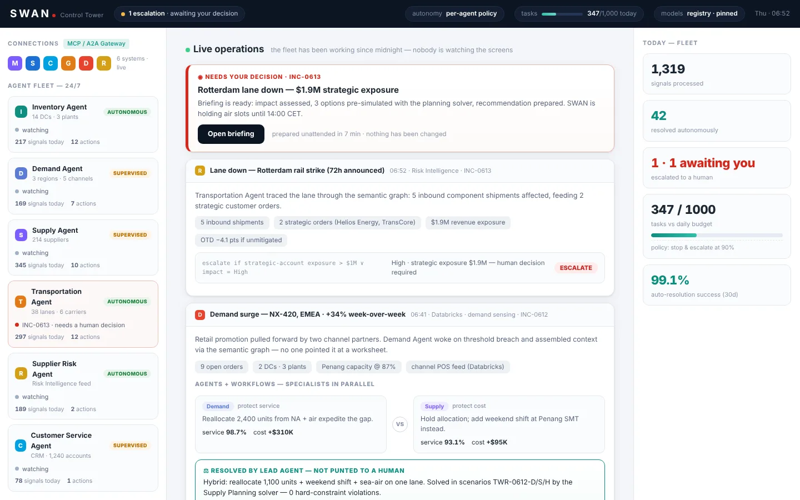

SWAN, agents that run a supply chain
A prototype of an autonomous, governed agent for enterprise supply chains. It watches connected systems around the clock, works out what a disruption means, simulates every option, and acts only within the limits a person has set.
Each demo plays itself. Use Pause, Next, or Restart in the corner to steer. All data is made up.



The problem
Supply chain planners spend their days triaging alerts: late shipments, supplier slips, capacity limits. Most are noise, a few are expensive, and the real cost is the hours it takes to tell which is which and work out a fix.
Handing that work to an agent only helps if people can trust it. So the design question was less "can it act?" and more "when should it act on its own, and when should it ask?"
How SWAN works
- It senses. Signals from email, ERP, logistics, and planning systems arrive through a shared gateway. SWAN acts only on signals that corroborate each other.
- It investigates. Specialist agents trace what changed, what is driving it, and what is downstream, and build the worksheets a planner would have built by hand.
- It simulates first. Every candidate fix runs as its own scenario in a planning solver, so options arrive pre-checked against hard constraints.
- It acts within limits. Low-risk changes within the autonomy level are applied and logged. Anything bigger waits for approval.
- It escalates with a briefing. When a decision belongs to a person, SWAN prepares the impact, the options, and a recommendation, and changes nothing until they answer.
- It learns. Outcomes and corrections feed back, so recommendations match how that planner actually works.
Governance by design
- Autonomy levels. Set per agent and per spend limit.
- A never-do list. Some actions are always held for a person, whatever the confidence.
- Approval gates. Writebacks to other systems are gated, validated, and logged as they happen.
- Audit trail with rollback. Every decision, assumption, and action is recorded, and reversible actions can be undone.
- Task budgets. Usage is metered, and the agent stops and escalates before it overspends.
- Pinned models. The control plane shows which model does which job, and which version.
Three demos
Incident response
A planner and the agent work one disruption end to end: signals, impact, options, approval, and execution.
Watch itException management
A Monday-morning plan run produces 812 exceptions. By the time the planner sits down, only eight need a call.
Watch itControl tower
The view one level up: a fleet of agents, what they resolved overnight, and the one escalation for leadership.
Watch it